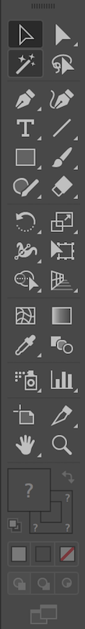
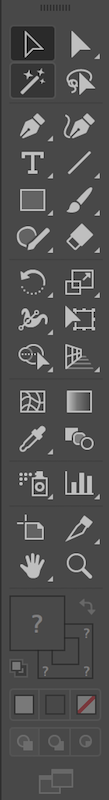
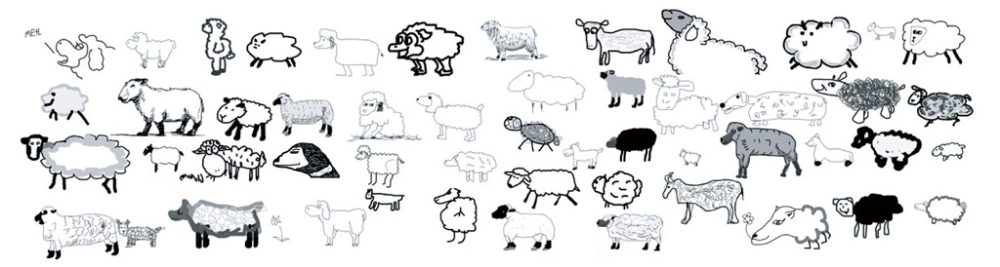
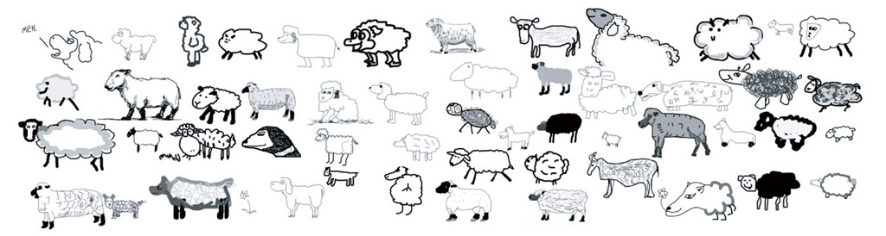

Generative Typography
Dae-In Chung
How much do we know about computer?
All artists and designers in the 21st century should have experience programming their own software…If the person is unable to shape the tool they are shaped and moulded by another person’s idea of what the software is and what software can be. — Casey Reas
 



Every software that we use is built with computer codes written by people.
I can build something bigger than what I can imagine...
The machine is your extension.
— Manfred Mohr
Algorithm
A self-contained step-by-step set of operations to be performed.
A series of instructions.


communicate with machines.

Machine language
Something humans can read as well.

Scratch

Nodebox
Processing
p5.js
Rule-based design
Casey Reas
Casey Reas
10 PRINT CHR$(205.5+RND(1)); : GOTO 10


Sol Lewitt

Sol Lewitt
Sol Lewitt
- Using a black, hard crayon, draw four contiguous ten inch squares.
- Within the first square (upper left) draw one line, one inch long.
- Within the second square (upper right) draw ten lines, each one inch long.
- Within the third square (lower left) draw one hundred lines, each one inch long.
- Within the fourth square (lower right) draw one thousand lines, each one inch long.
- All lines should be drawn at random, and straight.
 

Aaron Koblin
Generative typography,
or, computational typography
or, parametric typography
Why do we care?
- The power of computation
- Automation of repetitive tasks
- Animation & interaction
- New possibilities for visual expressions
- Looking at problems and solutions in different ways
- Digital communication
The Future of Making Things: Generative Design from Autodesk
Working with systems and rules.
Working with variables(parameters) and their range.
Mapping data to form
- distance
- temperature
- date/time
- nuance
- emotion
- and more...
iOS 10 Messages App


Metafont by Donald Knuth (image from Printing Code)
Meta-design is much more difficult than design;
it’s easier to draw something than to explain how to draw it.
— Donald Knuth, The Metafont Book

...we are aware that it is difficult to produce subtle and refined typographical fonts in the classical meaning. nevertheless we believe that there is a undeniable quality in parametric font design and we try to bring it closer to the world of the designers.
— metaflop.com
Type Design Examples
Drew, Erica, LornaTypography & Coding
Sounds fun but it's not easy.
It's fun because it's hard.
Hard fun.
What we need:
- Open mind
- Patience
- Persistence
- Support for each other
- Perspective
Conditional Design
...Our work focuses on processes rather than products: things that adapt to their environment, emphasize change and show difference...
— conditionaldesign.org


Turtle exercise
Think of a turtle at the center of paper.

You will create instructions for it to follow and move.

When the turtle moves, it leaves a trace.

I will give you a shape to draw.

Discuss as a group to decide what instructions to use.
You can only use sounds for your instructions.
No spoken words.
Describe how, not what to draw.
"Draw a big rectangle." - how big? what kind of rectangle?
"Move 5 units up."
Meta-design — describe how to draw.
Half the group will give instructions.
The other half will execute them.
Let's do it.


TO SQUARE
FORWARD 100
RIGHT 90
FORWARD 100
RIGHT 90
FORWARD 100
RIGHT 90
FORWARD 100
RIGHT 90
END
from Mindstorm by Seymour Papert
TO SQUARE
REPEAT 4
FORWARD 100
RIGHT 90
END
from Mindstorm by Seymour Papert
TO SQUARE:SIZE
REPEAT 4
FORWARD :SIZE
RIGHT 90
END
from Mindstorm by Seymour Papert
- Parameterize
- Function
- Modularize
- Iteration
Programming/design Concepts
Wrap up
- Work with system and rules, not just individual elements
- Geometrically constructed forms
- potentials and drawbacks